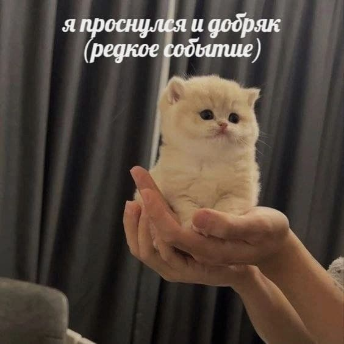
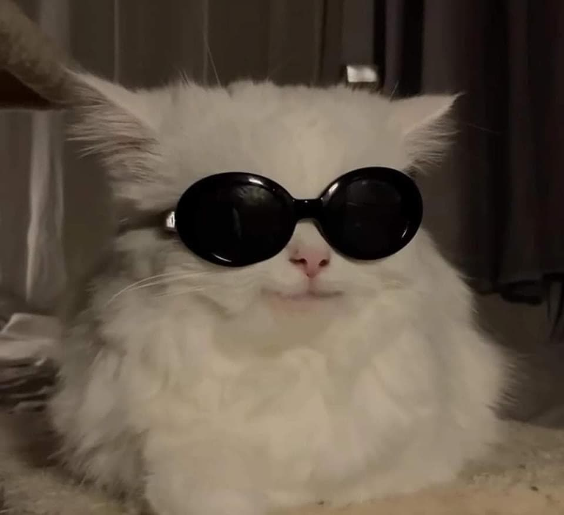
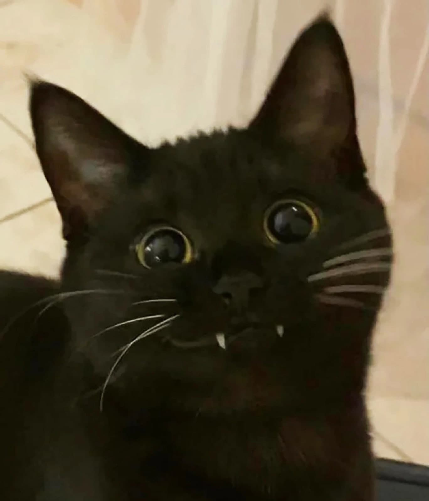
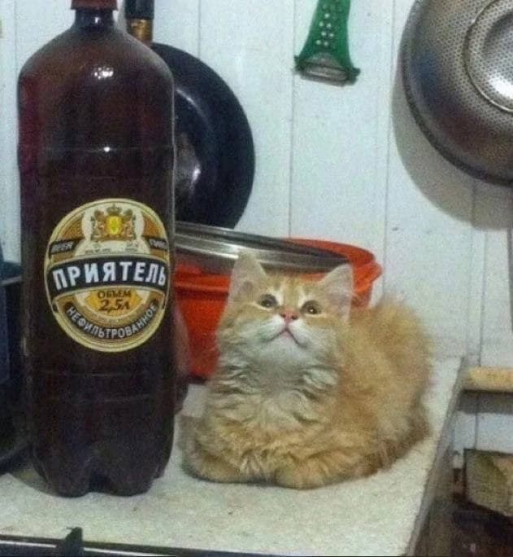
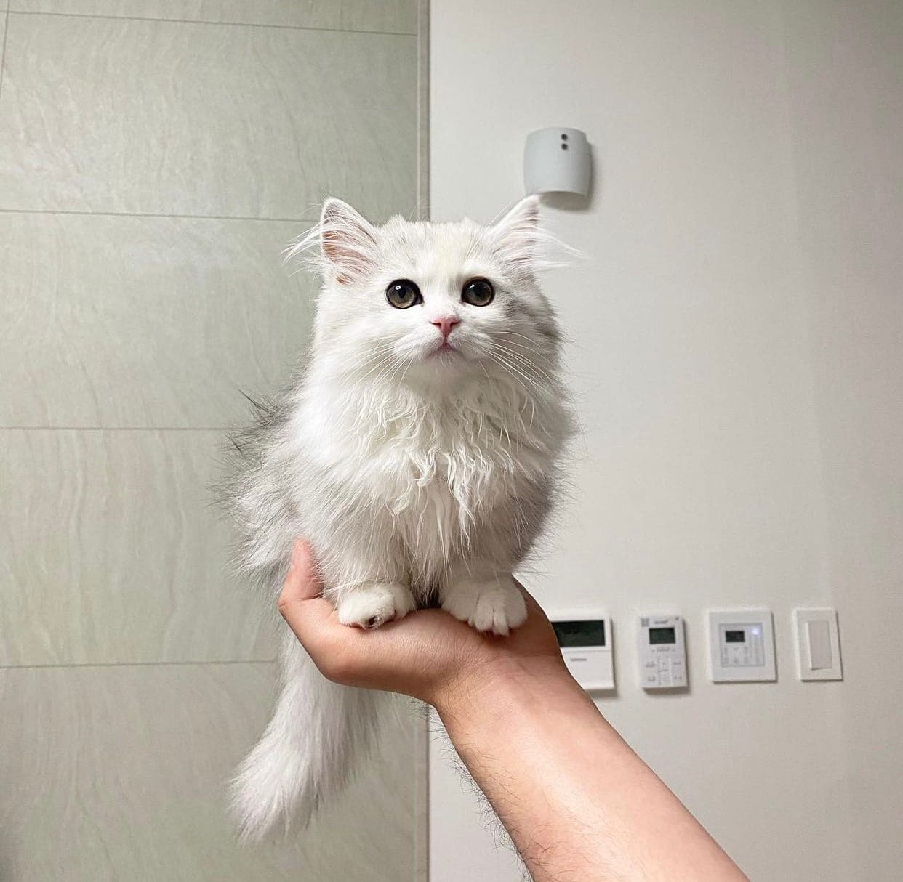
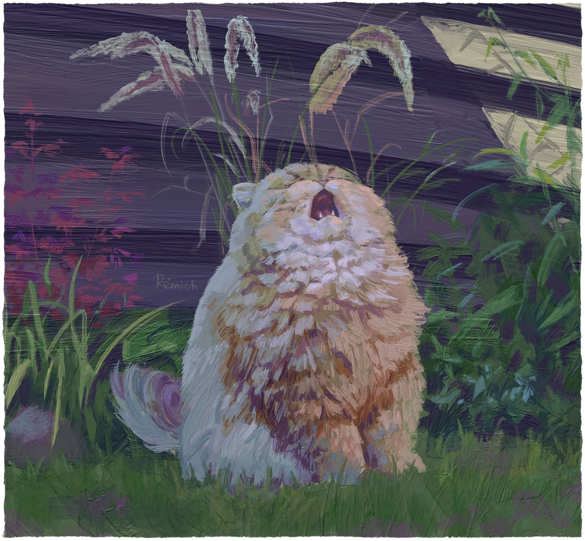

Это было самое начало пути. На этом этапе важно было проникнуться основами и настроиться на учёбу. И, возможно, подумать, как новые знания могут повлиять на ваше будущее.
Этот курс был моим первым, исключая самостоятельное обучение, поэтому было немного волнительно, но не сказать, что страшно.
1 спринт: Я — чистый лист
<the new page>

На первых этапах мы работали со страхами и сомнениями, которые часто испытывают новички. Один из них — страх перед чистым листом. Это, конечно же, намного сложнее, чем боязнь куска бумаги. Часто за этим ощущением скрываются более глубокие вопросы: с чего начать? а вдруг будет слишком сложно? что, если я не справлюсь?
Я был знаком с веб-программированием до практикума, но интенсивно начал обучаться только с ним. К первому спринту я подошел с огромными усилиями.
1 спринт: А если не получится?
<a head start>

Первый проект — позади! Но это всё ещё самое начало пути. Радость могла быстро померкнуть и смениться ожиданием провала. Или вы, наоборот, могли вдохновиться успехами и поверить в себя.
Первый спринт дался мне очень легко, за первую неделю я освоил всю теорию, и в начале второй проект уже был сдан. Я получил много уверенности из-за первого спринта, т.к. по приходу на курсы не был уверен, что запомнил хоть что-то из самостоятельного обучения, но мои страхи оказались напрасны.
2 спринт: Погоня за идеалом
<excitement>

На этом этапе вы уже достаточно разбирались в основах вёрстки, чтобы понять, как много ещё впереди. Вы могли попытаться погнаться за идеалом и понять, что он недостижим. А, может, вы вовсе и не подвержены перфекционизму и вместо того, чтобы сделать идеально, старались просто сделать.
У меня было много времени осмыслить все что произошло за первый спринт и ко второму хоть я и подошел с таким же энтузиазмом, все же было какое то чувство волнения перед неизведанным.
2 спринт: О тех, кто рядом
<confidence>

Всё это время вы были не одиноки (хотя, возможно, иногда и чувствовали, что одни против целого мира). Вас окружали одногруппники, команда сопровождения и просто близкие люди, которым можно пожаловаться, если очередной макет просто так не поддавался. Осваивать что-то новое легче, когда рядом есть единомышленники, не правда ли?
Второй спринт был сложнее первого, той уверенности как при начале первого уже не было. Но все же проект был сделан, переделан и сдан.
3 спринт: Обходные стратегии
<anxiety>

На этом курсе вы постоянно решали разные задачи. В какой-то момент вам могло показаться, что решения просто иссякли. Значит, пришло время посмотреть на задачу под другим углом.
Третий спринт начался не так гладко как прошлые, теория была в разы сложнее чем в предыдущих, что придавало больше неуверенности. Но помощь одногруппников и наставников успокаивала.
3 спринт: Когда опускаются руки
<achievement>

Во время учёбы часто возникает чувство, когда не знаешь, за что хвататься. Вроде и проектную пора сдавать, и задачи хочется порешать, и в теории получше разобраться, и жизнь не забыть пожить. В такие моменты очень нужна концентрация. Вспомните, откуда вы её черпали.
Третий спринт оказался самым сложным, тем не менее он был сдан, и, это придало немало уверенности перед началом четвертого спринта.
«Сейчас я здесь»
<experience>
Сейчас вы уже очень много знаете о вёрстке. Но это только начало. Во-первых, впереди ещё много материала про «красотищу». Во-вторых, с окончанием курса учёба не заканчивается. Вёрстка — это целый мир. И этот мир постоянно меняется. Познать его полностью не получится, но это тот случай, когда важен сам процесс познания. Ведь часто путь — и есть результат.
Этот спринт подходит к концу, он был непростым, есть некая радость от завершения такой трудоемкой работы, но также и волнение перед началом новых приключений.